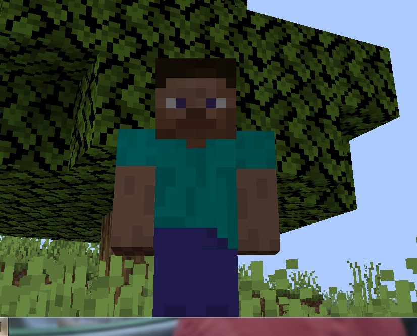
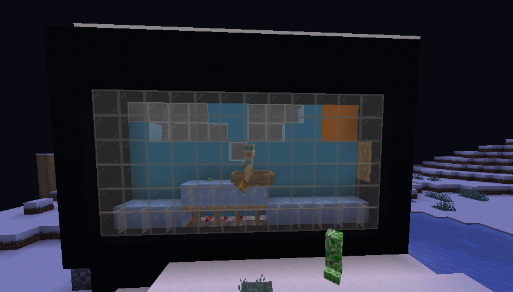
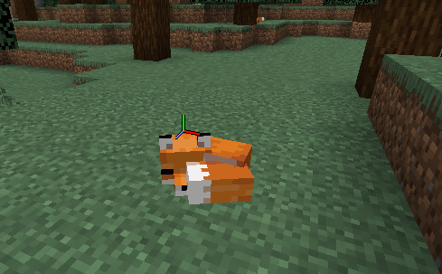
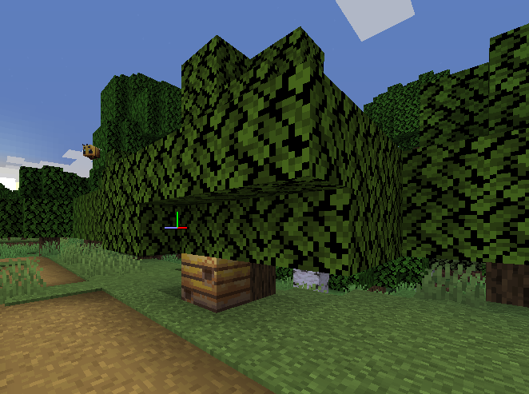

こんにちは今日からマインクラフトについてのサイトを書くことにしました。
僕は小さい頃からマインクラフトをやっていてもう何年間かやっています。
なのでマインクラフトのことは意外と知っています。なのでマイクラのことに
ついて紹介するコーナーでしょうかいしようとおもいます。よろしくおねがいします。
これから週３に一回更新したいと思います。もしも更新できなかったらごめんなさい
マインクラフトとはMojang・マイクロソフトが開発していて販売してるゲームである
今年で１０周年を迎えてるゲーム冒険をしたり畑を作って収穫したりいるんな建物を作ったり
ワールドを観光したりできるゲームでmodを入れたりするといつものマイクラに追加要素
を入れることができるゲームです
映画館をイメージして波が動く機械を作りました今度作り方を紹介します
木陰で寝てたキツネ
1.15で追加される蜂の巣（木のした）
